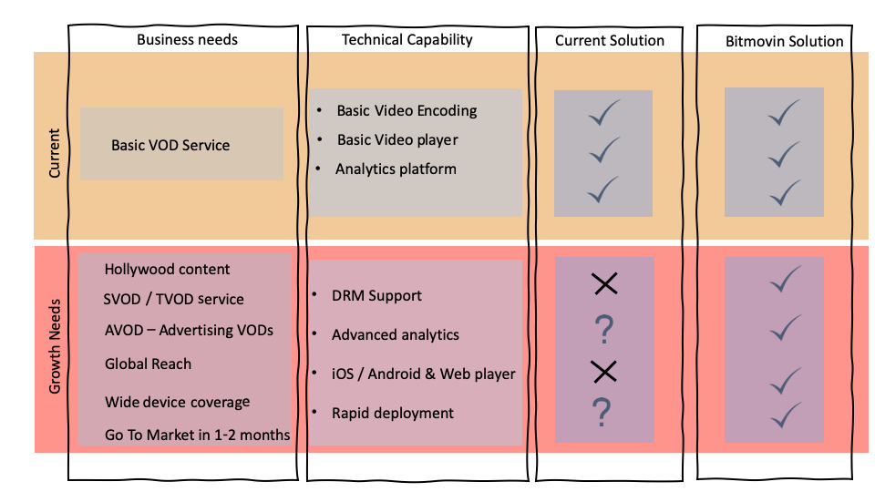
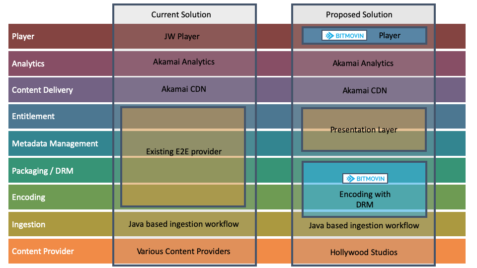
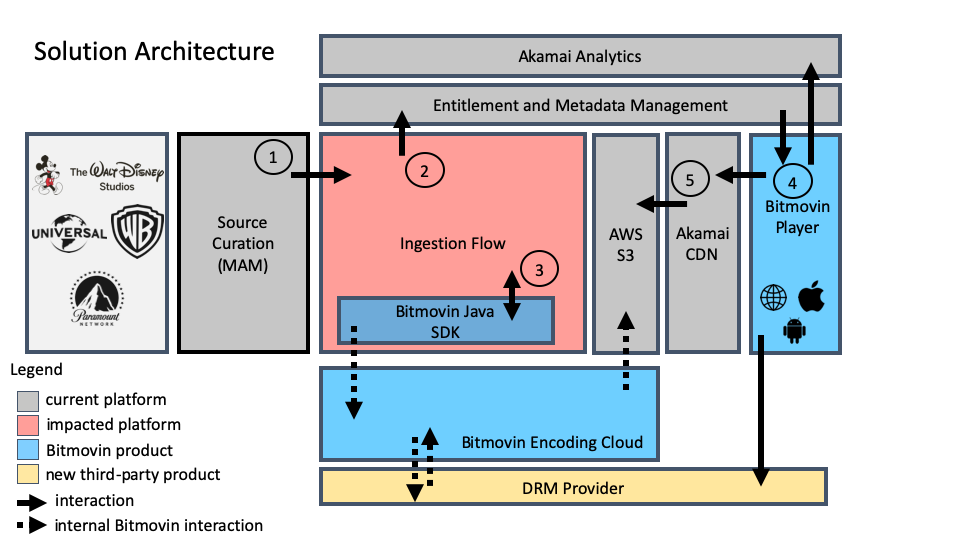
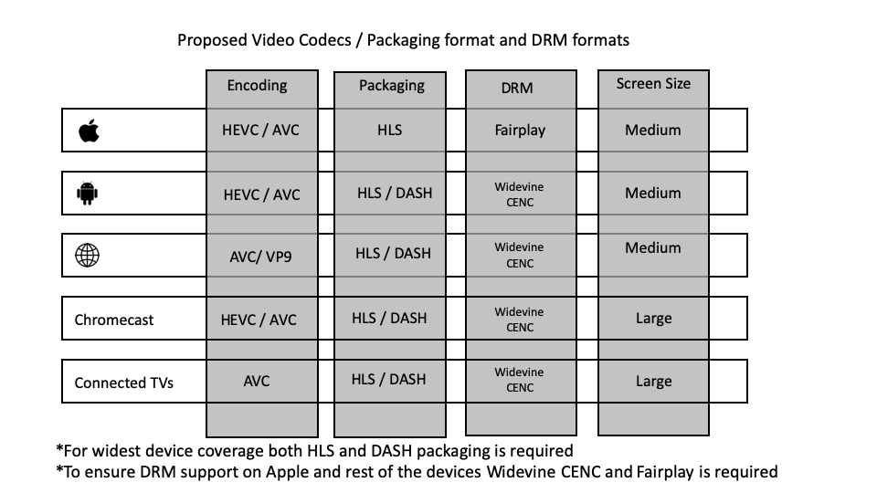

How?


*Bitmovin also has an analytics product which can complement customer needs, however due to strong desire to maintain Akamai analytics Bitmovin
product hasn't been presented.

Flow (3) and (4) are covered in last two slides with example code
